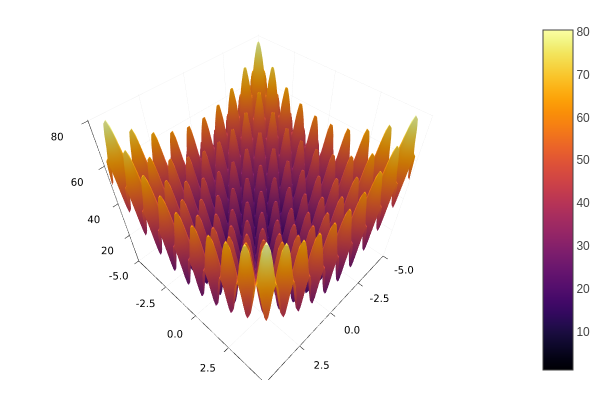

Metaheuristics - an Intuitive Package for Global Optimization
Author: Jesús-Adolfo Mejía-de-Dios (@jmejia8)
High-performance algorithms for optimization coded purely in a high-performance language.


Introduction
Optimization is one of the most common tasks in the scientific and industrial field but real-world problems require high-performance algorithms to optimize non-differentiable, non-convex, discontinuous functions. Different metaheuristics algorithms have been proposed to solve optimization problems but without strong assumptions about the objective function.
This package implements state-of-the-art metaheuristics algorithms for global optimization. The package aims to provide easy-to-use (and fast) metaheuristics for numerical global optimization.
Installation
Open the Julia (Julia 1.1 or Later) REPL and press ] to open the Pkg prompt. To add this package, use the add command:
pkg> add MetaheuristicsOr, equivalently, via the Pkg API:
julia> import Pkg; Pkg.add("Metaheuristics")Quick Start
Assume you want to solve the following minimization problem.

Minimize:
\[f(x) = 10D + \sum_{i=1}^{D} x_i^2 - 10\cos(2\pi x_i)\]
where $x\in[-5, 5]^{D}$, i.e., $-5 \leq x_i \leq 5$ for $i=1,\ldots,D$. $D$ is the dimension number, assume $D=10$.
Solution
Firstly, import the Metaheuristics package:
using MetaheuristicsCode the objective function:
f(x) = 10length(x) + sum( x.^2 - 10cos.(2π*x) )Instantiate the bounds:
D = 10
bounds = boxconstraints(lb = -5ones(D), ub = 5ones(D))Also, bounds can be a $2\times 10$ Matrix where the first row corresponds to the lower bounds whilst the second row corresponds to the upper bounds.
Approximate the optimum using the function optimize.
result = optimize(f, bounds)Optimization Result =================== Iteration: 883 Minimum: 0.994959 Minimizer: [-4.48345e-09, -9.30599e-10, 3.25831e-10, …, -0.994959] Function calls: 61810 Total time: 0.2411 s Stop reason: Due to Convergence Termination criterion.
Optimize returns a State datatype which contains some information about the approximation. For instance, you may use mainly two functions to obtain such an approximation.
minimum(result)0.9949590570932969minimizer(result)10-element Vector{Float64}:
-4.4834466353035e-9
-9.305989054639169e-10
3.258305882527824e-10
1.2886522823709618e-9
-2.8635734772523426e-9
-5.632279074993702e-10
-3.368283468758625e-9
-1.0454825577878258e-9
-4.519765429079066e-9
-0.9949586384993971Contents
- Examples
- Algorithms
- Problems
- Performance Indicators
- Multi-Criteria Decision-Making
- Visualization
- API References
Related packages
- Evolutionary.jl: Genetic algorithms, "Evolution" Strategies, among others.
- GeneticAlgorithms.jl: Genetic Algorithms
- BlackBoxOptim.jl: Optimizers for black-box optimization (no information about the objective function).
- NODAL.jl: Stochastic Local Search methods, such as Simulated Annealing and Tabu Search.
- Other Packages.
How to cite?
Please cite the package using the bibtex entry
@article{metaheuristics2022,
doi = {10.21105/joss.04723},
url = {https://doi.org/10.21105/joss.04723},
year = {2022},
publisher = {The Open Journal},
volume = {7},
number = {78},
pages = {4723},
author = {Jesús-Adolfo Mejía-de-Dios and Efrén Mezura-Montes},
title = {Metaheuristics: A Julia Package for Single- and Multi-Objective Optimization},
journal = {Journal of Open Source Software} }or the citation string
Mejía-de-Dios et al., (2022). Metaheuristics: A Julia Package for Single- and Multi-Objective Optimization. Journal of Open Source Software, 7(78), 4723, https://doi.org/10.21105/joss.04723
in your scientific paper if you use Metaheristics.jl.
Acknowledgments
Jesús Mejía acknowledges support from the Mexican Council for Science and Technology (CONACyT) through a scholarship to pursue graduate studies at the University of Veracruz, MEXICO. This allowed the development of Metaheuristics.jl from August 2018 to July 2022.